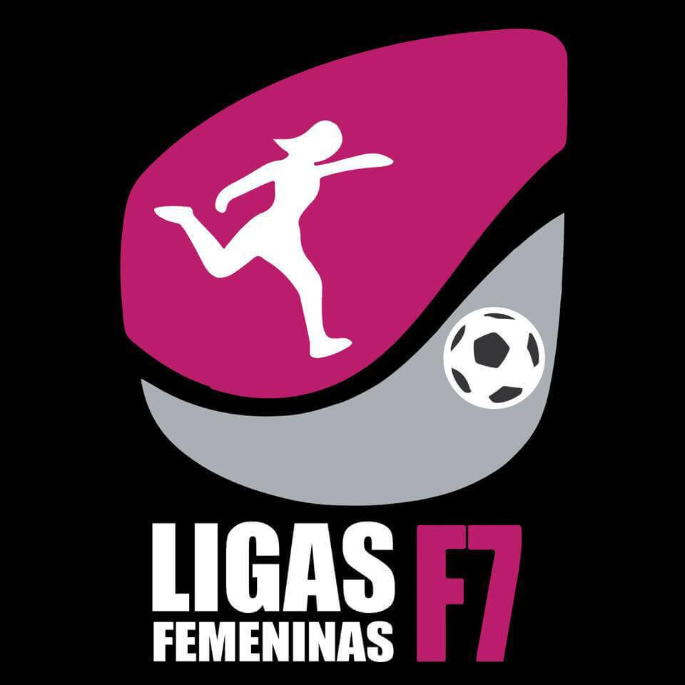
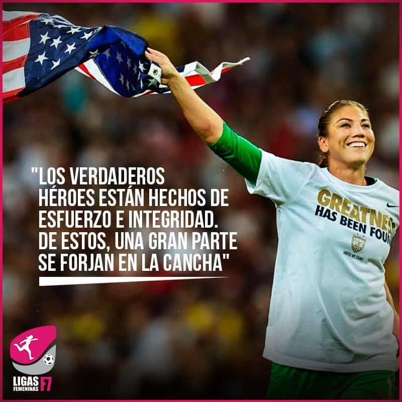
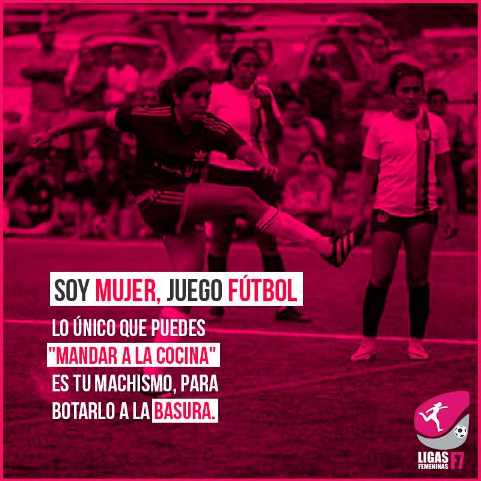
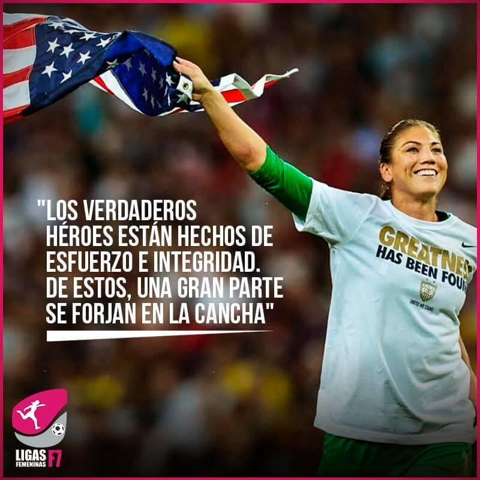
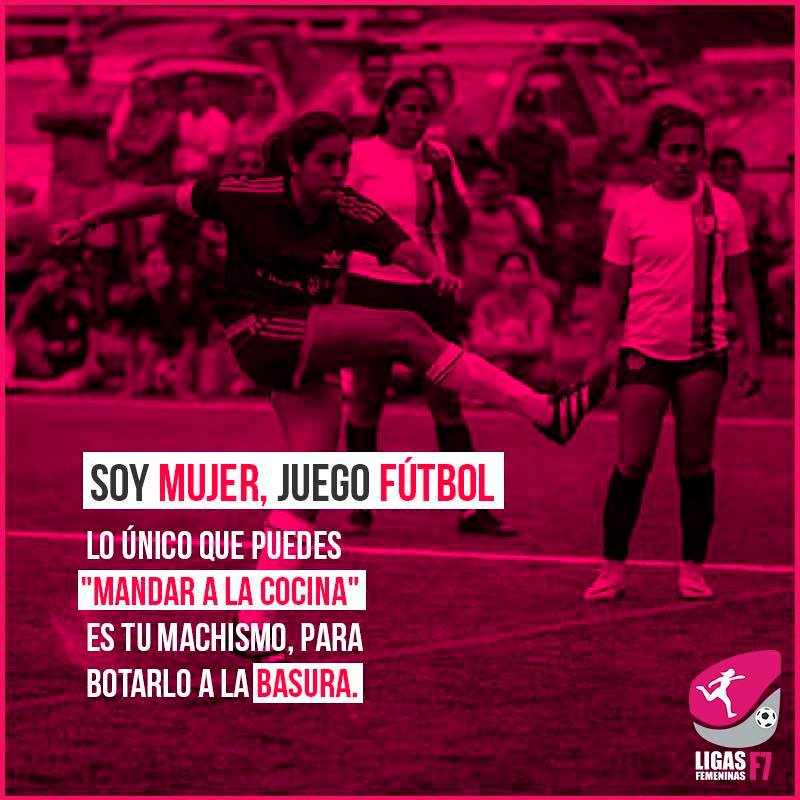

Ligas Femeninas F7
Nadie te puede decir no puedes...!!!>
La organización Ligas Femeninas de Fútbol 7 es el circuito de Fútbol Femenino más grande del Perú que busca, a través de la creación de ligas, academias, partidos libres y capacitaciones formalizar el fútbol 7 femenino en el Perú. A su vez, tiene por objetivo, a través del fútbol, dar empoderamiento y liderazgo a la mujer contribuyendo en la disminución de la inequidad de género en el deporte. También motiva la actividad física y estilo de vida saludables.
Nuestros productos son:
1. Ligas: Libre LF7 (1ra, 2da y 3ra división), Inter Colegio, Inter empresa
2. Academia LF7
3. Pichangas Domingueras
 


